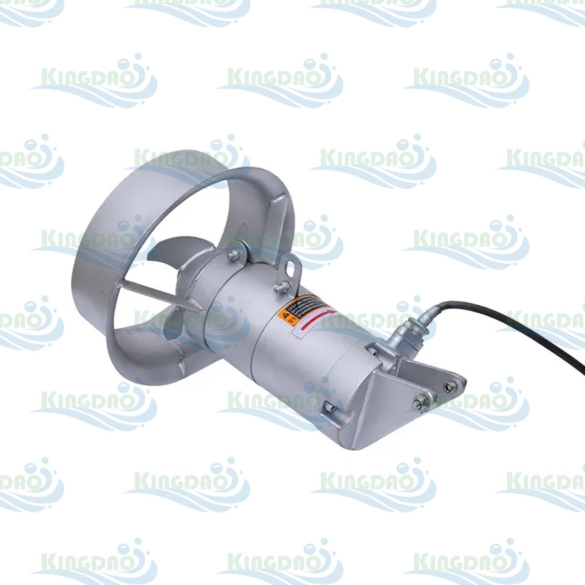
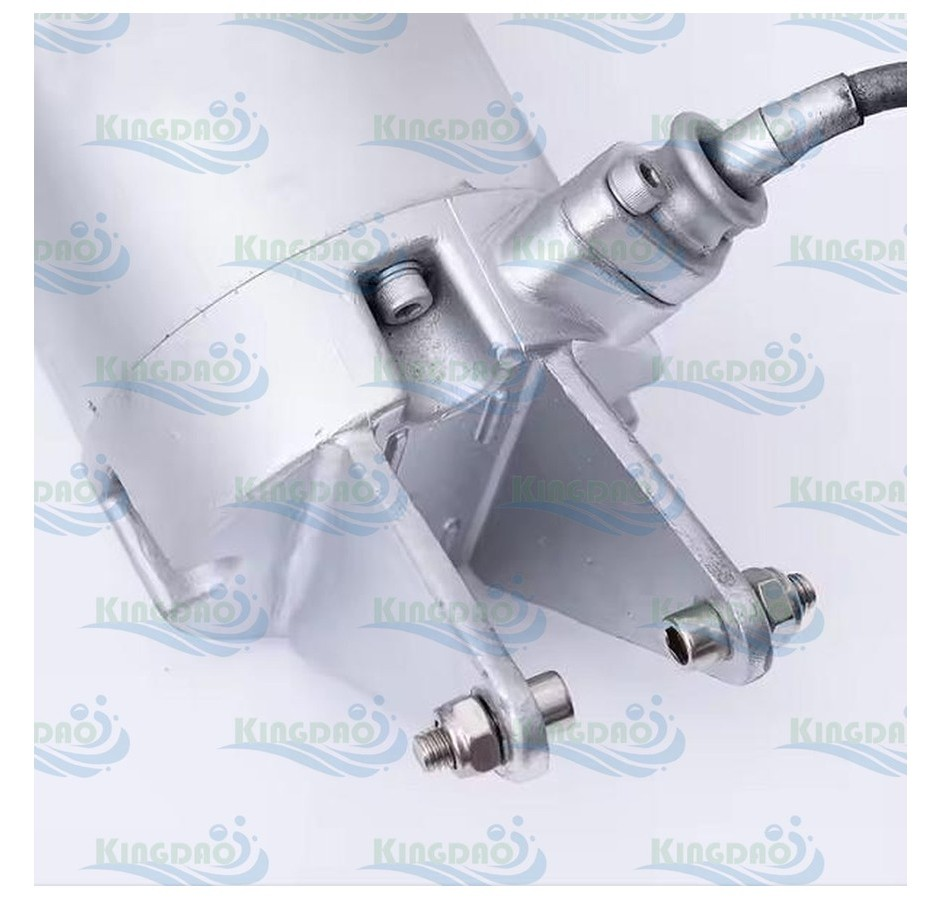

In short: Low-speed mixing that keeps solids in suspension without adding oxygen. Available with a draft tube for defined circulation in anoxic zones and sludge holding tanks, on guide rail mounting so the unit is raised for service without entering the basin, with double mechanical seals and condition monitoring.
In anoxic and equalisation tanks the job is to keep the contents mixed without introducing oxygen — an aerator would defeat the purpose. Submersible mixers run at low speed with a large propeller, moving a high volume at low velocity.
Draft-tube mixers are used where a defined circulation pattern is needed, high-speed units where the tank is small or the solids tend to settle quickly.
Guide-rail mounted, lifted out for service without draining the basin.


A submersible mixer is normally specified for one of two jobs: putting energy into a small volume quickly, or moving a large volume slowly without shearing the floc. We build both from the same platform.
QJB-M — high-speed mixing. Direct-coupled drive with a pressed stainless propeller. The high rotational speed produces intense local turbulence, which is what coagulant dosing needs: the chemical has to meet the solids in a few seconds, not in a few minutes. Also used where the anoxic zone drifts towards stratification, and in industrial liquors carrying fibre or suspended solids.
QJB-P — low-speed propulsion. Helical gear reduction driving a one-piece FRP propeller. Low speed, large swept volume: it sets the whole tank circulating rather than stirring a pocket of it, which is the condition that denitrification and phosphorus removal actually depend on. It also keeps ice from forming and stops solids banking on the floor.
Sealing is the part that fails. Two independent tungsten carbide mechanical seals sit in series, with a multi-chamber leak detection system reporting to the control panel. Where a conventional single seal floods silently and takes the gearbox with it, this arrangement flags the first ingress instead.
Motor and protection. IP68 with class F insulation, winding over-temperature protection, and oil-chamber leak detection — the three failures that kill submersible mixers in service.
Installation. Dual guide rail auto-coupling: the unit drops onto the rails, seals on the discharge, and comes back up for service with a hoist — the tank does not have to be drained and nobody has to enter it.
| Item | Specification |
|---|---|
| Medium pH | 5 – 9 |
| Medium density | ≤ 1150 kg/m³ |
| Medium temperature | ≤ 40 °C |
| Submergence depth | ≤ 20 m standard; deeper on request |
| Motor protection | IP68 |
| Insulation class | Class F, with winding over-temperature protection |
| Shaft seal | Two independent tungsten carbide mechanical seals |
| Leak monitoring | Multi-chamber oil/water detection, wired to the control system |
| Impeller material | Pressed stainless steel, or high-strength FRP for the propulsion range |
| Fasteners | Stainless steel throughout |
| Installation | Dual guide rail auto-coupling (lift out without draining), or fixed mounting |
| Warranty | 12 months on core components |
Where a submersible mixer puts energy into a zone, a hyperboloid mixer moves the entire basin: one large curved impeller turning slowly on a vertical shaft, driving flow down to the floor and out along it.
How it moves water. The hyperbolic curve on the impeller converts rotation into a downward axial jet and a radial floor current at the same time. There is no vortex at the surface and no dead corner under the impeller, which is why it holds solids in suspension across a whole basin rather than in one pocket.
Where it is used. Equalisation and storage tanks, anoxic and anaerobic basins, sludge holding tanks, and any basin where the solids load is high enough that a submersible unit would need to be multiplied to cover the floor area.
Sized from the tank, not from a list. Power is read from the basin volume and the length-to-width ratio, then multiplied by the sludge concentration factor below. Speed is set by the impeller diameter. One mixing unit covers a basin up to roughly 20 m wide; larger basins take multiple units.
Mounting. Floor or bridge mounted on a vertical shaft, with the drive above the water line — no submerged motor, no seal in the sludge, and the gearbox is accessible without entering the basin.
| Impeller Ø D (mm) | Height H (mm) |
|---|---|
| 500 | 200 |
| 1000 | 400 |
| 1500 | 515 |
| 2000 | 630 |
| 2500 | 670 |
Impeller geometry — the curve height scales with diameter.
| Model Ø (mm) | Speed range (rpm) | Standard speed (rpm) |
|---|---|---|
| 500 | 60 – 120 | 90 |
| 1000 | 30 – 70 | 50 |
| 1500 | 22 – 40 | 36 |
| 2000 | 18 – 38 | 28 |
| 2500 | 16 – 36 | 26 |
Standard supply 380 V / 50 Hz — 60 Hz and other voltages to order. A model suffix of /S denotes the cast impeller version; without it the impeller is pressed stainless steel.
| Model | Motor kW | Current A | Speed rpm | Impeller Ø mm | Thrust N | Weight kg |
|---|---|---|---|---|---|---|
| QJB0.37/6-220/3-980 | 0.37 | 1.4 | 980 | 220 | 115 | 20 |
| QJB0.55/6-220/3-980 | 0.55 | 1.7 | 980 | 220 | 140 | 20 |
| QJB0.75/8-260/3-740 | 0.75 | 3.2 | 740 | 260 | 228 | 35 |
| QJB1.5/6-260/3-980 | 1.5 | 3.9 | 980 | 260 | 406 | 35 |
| QJB2.2/8-320/3-740C/S | 2.2 | 5.9 | 740 | 320 | 815 | 110 |
| QJB4/6-320/3-980C/S | 4.0 | 9.6 | 980 | 320 | 853 | 115 |
| QJB1.5/8-400/3-740/S | 1.5 | 3.5 | 740 | 400 | 1120 | 50 |
| QJB2.5/8-400/3-740/S | 2.5 | 7.3 | 740 | 400 | 1176 | 70 |
| QJB3/8-400/3-740/S | 3.0 | 8.0 | 740 | 400 | 1190 | 70 |
| QJB4/6-400/3-980/S | 4.0 | 9.3 | 980 | 400 | 1540 | 73 |
| QJB4/12-620/3-480/S | 4.0 | 14.5 | 480 | 620 | 1680 | 184 |
| QJB5/12-620/3-480/S | 5.0 | 18.0 | 480 | 620 | 2520 | 184 |
| QJB7.5/12-620/3-480/S | 7.5 | 26.7 | 480 | 620 | 3640 | 229 |
| QJB10/12-620/3-480/S | 10.0 | 29.3 | 480 | 620 | 4060 | 229 |
| QJB12/12-620/3-480/S | 12.0 | 32.0 | 480 | 620 | 4340 | 250 |
| QJB15/12-620/3-480/S | 15.0 | 42.8 | 480 | 620 | 5880 | 305 |
| QJB18.5/12-620/3-480/S | 18.5 | 55.0 | 480 | 620 | 7420 | 315 |
| QJB22/12-620/3-480/S | 22.0 | 65.0 | 480 | 620 | 8540 | 345 |
The QJB-P low-speed propulsion range (two-blade and three-blade, Ø1100–2500 mm) is specified from basin circulation velocity rather than mixing duty, so it lives on a separate page.
Power is first read from basin volume assuming water. Then the sludge concentration decides how much extra motor you actually need — this is the step most quotations skip.
| Sludge concentration (% dry solids) | Motor power multiplier |
|---|---|
| 0.8 – 0.9 % | × 1.0 |
| 1.0 – 1.5 % | × 1.5 |
| 1.6 – 2.0 % | × 2.0 |
| 2.1 – 3.0 % | × 3.0 |
| 3.1 – 4.0 % | × 5.0 |
| 4.1 – 5.0 % | × 7.0 |
| 5.1 – 6.5 % | × 10.0 |
Read the base power from basin volume and L/W ratio, then multiply. Above 0.8 % dry solids the mixer is no longer stirring water.
One mixing unit covers a basin up to about 20 m across. Larger basins are divided into mixing cells.
From basin volume and the length/width ratio — a long narrow basin needs more power than a square one of the same volume.
Apply the multiplier above. At 4–5 % solids the motor is seven times the water-duty figure.
Speed follows impeller diameter — 90 rpm at Ø500 down to 26 rpm at Ø2500.
The two ranges are not interchangeable — pick by what the process needs the water to do, then size from the tank.
| QJB-M high-speed mixing | QJB-P low-speed propulsion | |
|---|---|---|
| Drive arrangement | Direct-coupled, compact footprint | Helical gear reduction, smooth running |
| Flow pattern | High velocity, intense local turbulence | Low velocity, large volume circulation |
| Impeller | Pressed stainless steel propeller | One-piece FRP propeller |
| Where it is used | Flash mixing of coagulant in coagulation and equalisation tanks; homogenising anoxic zones; keeping solids in suspension in industrial liquors | Circulation in large aeration and anaerobic tanks; creating the hydraulic conditions for nitrogen and phosphorus removal; preventing ice formation and bottom sludge banks |
| What we need to select it | Tank geometry and water depth, process objective, medium viscosity / density / solids content, temperature range | Same inputs, plus the circulation velocity required by the process |
To select either range we need: tank geometry drawing, working water depth, process objective, and the medium — viscosity, density, solids content and temperature. On non-standard duties we will run a flow-field check before quoting rather than size from a table.
This equipment is built to the process requirement rather than offered as a fixed catalogue of standard models — because the wrong tank volume, plate size or membrane area cannot be corrected later on site.
Flow rate, the medium and its concentration, the installation arrangement, the discharge standard, and the supply voltage and frequency.
A model selection with the dimensioned GA drawing, material specification, utility consumption and the price against that specific duty.
A published table invites selection by flow alone — which is how undersized equipment gets installed. We would rather size it with you once.
15–35 days from drawing approval, depending on the line and the material. Confirm with us before quoting your client.
Anoxic zones · equalisation tanks · sludge holding · MBR membrane tanks
Flow, the medium, the installation and the discharge requirement — that is enough to select and quote.
Because the job is suspension, not aeration. A low-speed, high-flow impeller keeps solids moving through the whole volume without entraining air, which matters in anoxic and equalisation zones.
Where you need defined circulation - anoxic zones and sludge holding tanks. The tube turns an open mixer into a directed loop, so the flow is predictable rather than a local swirl.
On guide rails. The mixer is lifted to the surface on its own rails, so nobody has to enter the basin and the tank does not have to be drained.
A double mechanical seal with condition monitoring - the seal chamber is watched, so a leaking seal is reported before water reaches the motor.
From the tank volume and the solids you need to keep in suspension, not from the mixer's own throughput - a mixer has no throughput rating that means anything on its own.